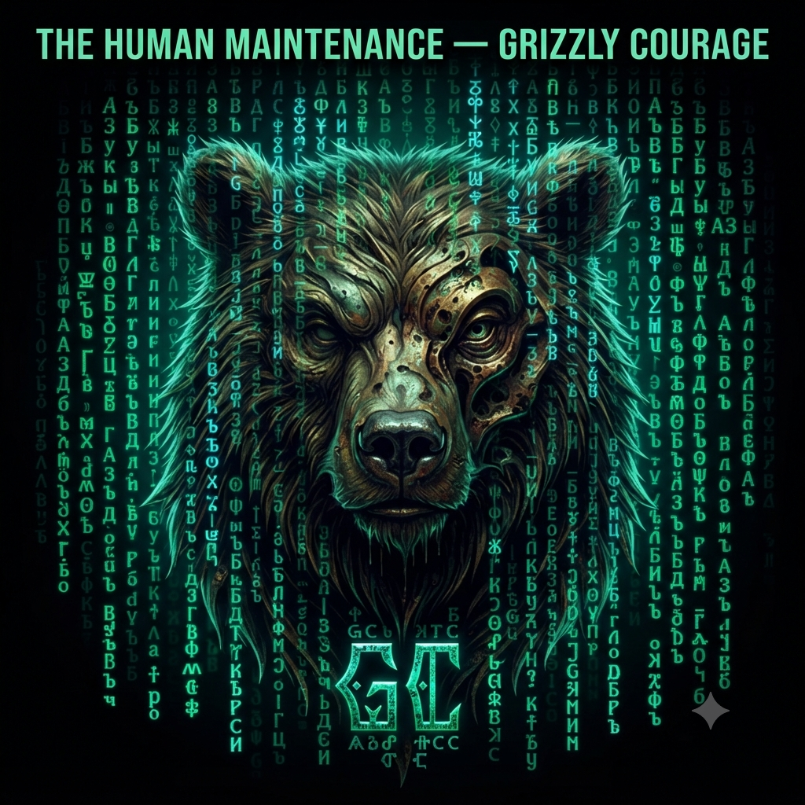

The Human Maintenance
Sústava sebapoznávacích systémov na jednom mieste. Vyber si modul, prejdi diagnostikou a nechaj si zobraziť svoju mapu — každý systém má vlastný výpočet, spoločné je len rozhranie.
Vyber si systém
-
01 · Bytie
Zrkadlo Bytia
Celostný odraz tvojho aktuálneho stavu bytia.
Otvoriť systém -
02 · Tieň
Anatómia Tieňa
Mapa nevedomých vzorcov, spúšťačov a obranných mechanizmov.
Otvoriť systém -
03 · Emócie
Emočný kompas
Orientácia v aktuálnom emočnom poli a jeho príčinách.
Otvoriť systém -
04 · Vzťahy
Vzťahový kompas
Dynamika medzi tebou a druhým — kompatibilita a napätia.
Otvoriť systém -
05 · Integrita
Navigátor Integrity
Diagnostika súladu medzi hodnotami, slovami a činmi.
Otvoriť systém -
06 · Live Core
Live Core & Moon Matrix
Živý prehľad energetického jadra a mesačných cyklov.
Otvoriť systém -
06 · Nebeské
Nebecký kompas
Kosmická mapa, osudové impulzy a nebeský rytmus tvého života.
Otvoriť systém